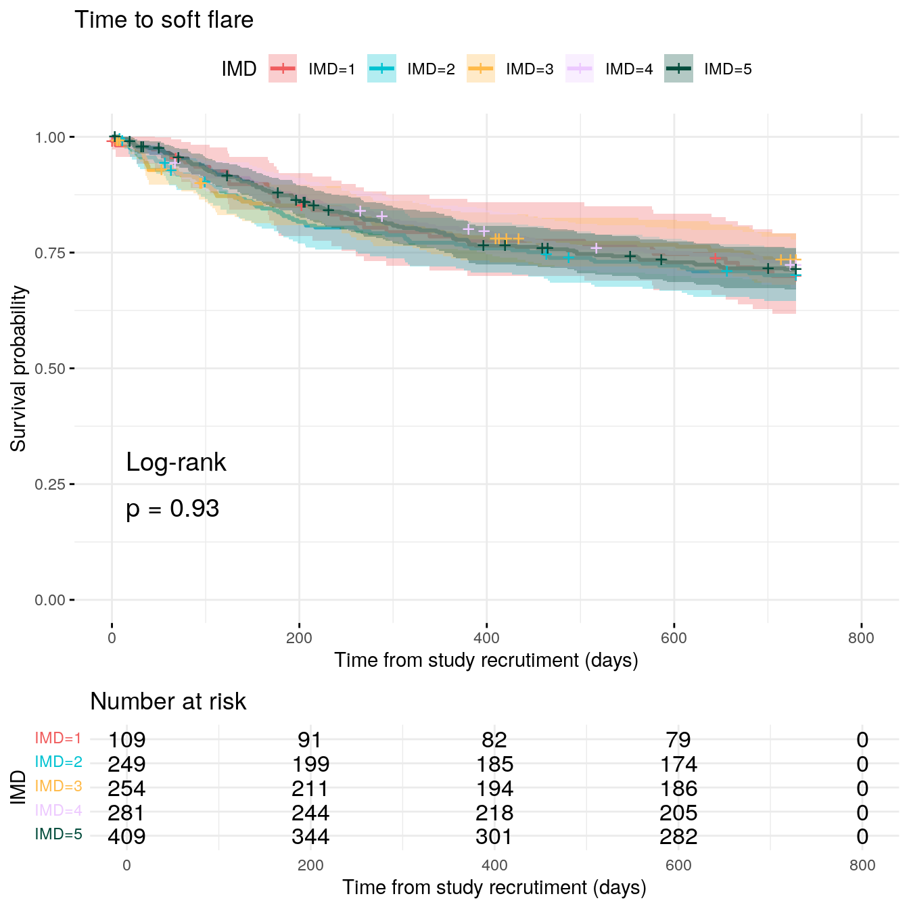
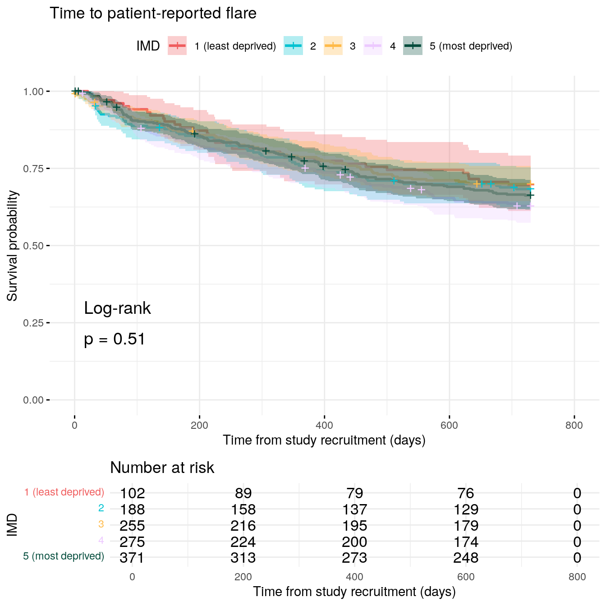
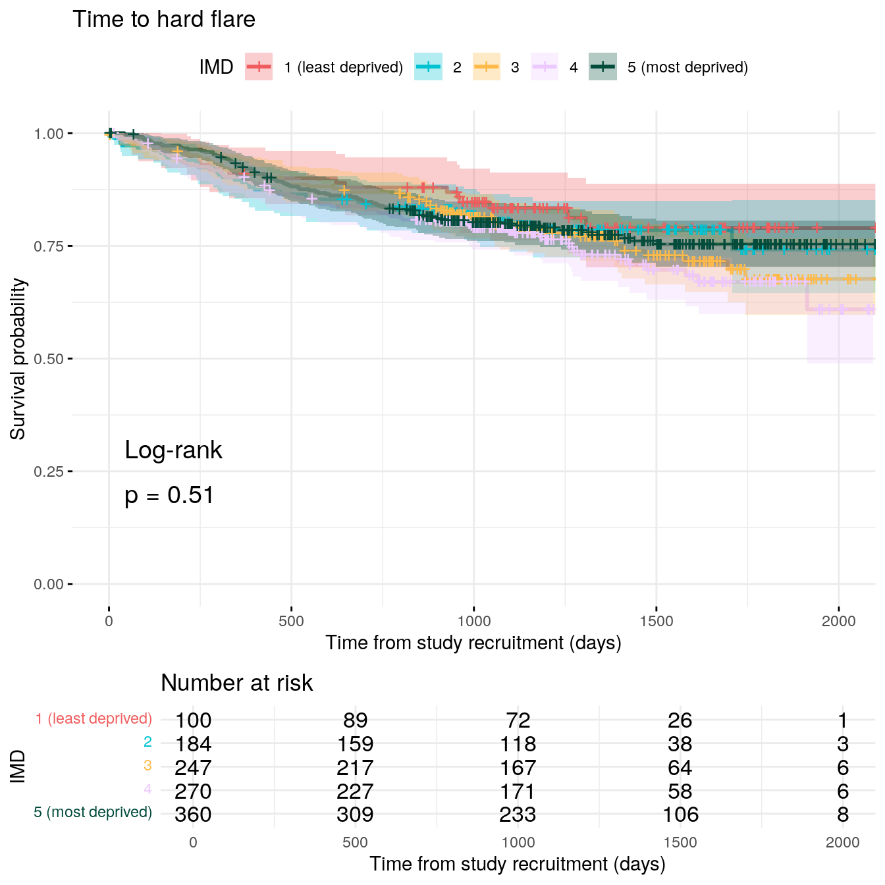

--- title: "Controlled variables" author: - name: "Nathan Constantine-Cooke" corresponding: true url: https://scholar.google.com/citations?user=2emHWR0AAAAJ&hl=en&oi=ao affiliations: - ref: CGEM - ref: HGU bibliography: Survival.bib --- ## Introduction ```{R} #| message: false library (readxl)library (tidyverse)library (datefixR)library (survival)library (survminer)library (pander)library (coxme)library (finalfit)library (DescTools)library (gtsummary)# paths to PREdiCCt data if (file.exists ("/docker" )) { # If running in docker <- "data/final/20221004/" <- "data/final/20231030/" <- "data/end-of-follow-up/" <- "data/processed/" else { # Run on OS directly <- "/Volumes/igmm/cvallejo-predicct/predicct/final/20221004/" <- "/Volumes/igmm/cvallejo-predicct/predicct/final/20231030/" <- "/Volumes/igmm/cvallejo-predicct/predicct/end-of-follow-up/" <- "/Volumes/igmm/cvallejo-predicct/predicct/processed/" <- readRDS (paste0 (outdir, "demo-full.RDS" ))$ FC <- log (demo$ FC)<- function (fit) {cat ("Cox model summary:" )%>% :: fit2df (condense = FALSE ) %>% :: kable (col.names = c ("Variable" ,"HR" ,"Lower 95%" ,"Upper 95%" ,"P-value" digits = 4 %>% print ()cat (" \\ newline Diagnostics: \\ newline " )cat (" \\ newline ::: {.panel-tabset} " )cat (" ###### Proportional hazards assumption test \\ newline " )cox.zph (fit)$ table %>% :: kable (col.names = c ("" ,"Chi-squared statistic" ,"DF" ,"P-value" digits = 4 %>% print ()cat (" \\ newline ###### DF betas \\ newline " )print (ggcoxdiagnostics (fit, type = "dfbeta" ))cat (" \\ newline ###### Martingale residuals \\ newline " )print (ggcoxdiagnostics (fit, type = "martingale" , linear.predictions = TRUE ))cat (" \\ newline ::: " )return ()<- function (fit, var) {# Get point estimate with 95% CI <- summary (fit)$ conf.int %>% as.data.frame () %>% filter (rownames (summary (fit)$ conf.int) %in% var) %>% select (` exp(coef) ` , ` lower .95 ` , ` upper .95 ` )# Ensure variables are in the same order as var <- HR.dat[var, ]# Add p-value $ p <- summary (fit)$ coefficients[var, "p" ]names (HR.dat) <- c ("HR" , "Lower95" , "Upper95" , "p" )<- readRDS (paste0 (outdir, "flares-overview.RDS" ))<- subset (flare.df, diagnosis2 == "CD" )<- subset (flare.df, diagnosis2 == "UC/IBDU" )``` [ high degree of missingness ](../Baseline/IBD.qmd#smoking) for these data and[ lack of significant associations with time to flare ](#smoking-status) has## Sex ### Crohn's disease #### Patient-reported flare ```{R} #| fig-height: 6 <- survfit (Surv (softflare_time, softflare) ~ Sex, data = flare.cd.df)<- ggsurvplot (fit,data = flare.cd.df,conf.int = TRUE ,pval = TRUE ,pval.method = TRUE ,ggtheme = theme_minimal (),risk.table = TRUE ,legend.title = "Sex" ,legend.labs = c ("Male" , "Female" ),palette = c ("#00A6ED" , "#F6511D" ),xlab = "Time from study recrutiment (days)" ,title = "Time to clinical flare" cairo_pdf ("plots/cd/soft-flare/controlled/sex.pdf" )invisible (dev.off ())png ("plots/cd/soft-flare/controlled/sex.png" ,width = 7 ,height = 7 ,units = "in" ,res = 300 invisible (dev.off ())``` #### Hard flare ```{R} #| fig-height: 6 <- survfit (Surv (hardflare_time, hardflare) ~ Sex, data = flare.cd.df)<- ggsurvplot (fit,data = flare.cd.df,conf.int = TRUE ,pval = TRUE ,pval.method = TRUE ,ggtheme = theme_minimal (),risk.table = TRUE ,legend.title = "Sex" ,legend.labs = c ("Male" , "Female" ),palette = c ("#00A6ED" , "#F6511D" ),xlab = "Time from study recrutiment (days)" ,title = "Time to hard flare" cairo_pdf ("plots/cd/hard-flare/controlled/sex.pdf" )print (p, newpage = FALSE )invisible (dev.off ())png ("plots/cd/hard-flare/controlled/sex.png" ,width = 7 ,height = 7 ,units = "in" ,res = 300 print (p, newpage = FALSE )invisible (dev.off ())print (p, newpage = FALSE )``` ### Ulcerative colitis #### Patient-reported flare ```{R} #| fig-height: 6 <- survfit (Surv (softflare_time, softflare) ~ Sex, data = flare.uc.df)<- ggsurvplot (fit,data = flare.uc.df,conf.int = TRUE ,pval = TRUE ,pval.method = TRUE ,ggtheme = theme_minimal (),risk.table = TRUE ,legend.title = "Sex" ,legend.labs = c ("Male" , "Female" ),palette = c ("#00A6ED" , "#F6511D" ),xlab = "Time from study recrutiment (days)" ,title = "Time to clinical flare" cairo_pdf ("plots/uc/soft-flare/controlled/sex.pdf" )print (p, newpage = FALSE )invisible (dev.off ())png ("plots/uc/soft-flare/controlled/sex.png" ,width = 7 ,height = 7 ,units = "in" ,res = 300 print (p, newpage = FALSE )invisible (dev.off ())print (p, newpage = FALSE )``` #### Hard flare ```{R} #| fig-height: 6 <- survfit (Surv (hardflare_time, hardflare) ~ Sex, data = flare.uc.df)<- ggsurvplot (fit,data = flare.uc.df,conf.int = TRUE ,pval = TRUE ,pval.method = TRUE ,ggtheme = theme_minimal (),risk.table = TRUE ,legend.title = "Sex" ,legend.labs = c ("Male" , "Female" ),palette = c ("#00A6ED" , "#F6511D" ),xlab = "Time from study recrutiment (days)" ,title = "Time to hard flare" cairo_pdf ("plots/uc/hard-flare/controlled/sex.pdf" )print (p, newpage = FALSE )invisible (dev.off ())png ("plots/uc/hard-flare/controlled/sex.png" ,width = 7 ,height = 7 ,units = "in" ,res = 300 print (p, newpage = FALSE )invisible (dev.off ())``` ## Smoking status ### Crohn's disease #### Patient-reported flare ```{R} #| fig-height: 6 <- survfit (Surv (softflare_time, softflare) ~ Smoke, data = flare.cd.df)<- ggsurvplot (fit,data = flare.cd.df,conf.int = TRUE ,pval = TRUE ,pval.method = TRUE ,ggtheme = theme_minimal (),risk.table = TRUE ,legend.title = "Smoking status" ,legend.labs = c ("Current" , "Previous" , "Never" ),palette = c ("#00A6ED" , "#FFB400" , "#F6511D" ),xlab = "Time from study recrutiment (days)" ,title = "Time to clinical flare" cairo_pdf ("plots/cd/soft-flare/controlled/smoke.pdf" )print (p, newpage = FALSE )invisible (dev.off ())png ("plots/cd/soft-flare/controlled/smoke.png" ,width = 7 ,height = 7 ,units = "in" ,res = 300 print (p, newpage = FALSE )invisible (dev.off ())print (p, newpage = FALSE )``` #### Hard flare ```{R} #| fig-height: 6 <- survfit (Surv (hardflare_time, hardflare) ~ Smoke, data = flare.cd.df)<- ggsurvplot (fit,data = flare.cd.df,conf.int = TRUE ,pval = TRUE ,pval.method = TRUE ,ggtheme = theme_minimal (),risk.table = TRUE ,legend.title = "Smoking status" ,legend.labs = c ("Current" , "Previous" , "Never" ),palette = c ("#00A6ED" , "#FFB400" , "#F6511D" ),xlab = "Time from study recrutiment (days)" ,title = "Time to hard flare" cairo_pdf ("plots/cd/hard-flare/controlled/smoke.pdf" )print (p, newpage = FALSE )invisible (dev.off ())png ("plots/cd/hard-flare/controlled/smoke.png" ,width = 7 ,height = 7 ,units = "in" ,res = 300 print (p, newpage = FALSE )invisible (dev.off ())print (p, newpage = FALSE )``` ### Ulcerative colitis #### Patient-reported flare ```{R} #| fig-height: 6 <- survfit (Surv (softflare_time, softflare) ~ Smoke, data = flare.uc.df)<- ggsurvplot (fit,data = flare.uc.df,conf.int = TRUE ,pval = TRUE ,pval.method = TRUE ,ggtheme = theme_minimal (),risk.table = TRUE ,legend.title = "Smoking status" ,legend.labs = c ("Current" , "Previous" , "Never" ),palette = c ("#00A6ED" , "#FFB400" , "#F6511D" ),xlab = "Time from study recrutiment (days)" ,title = "Time to clinical flare" cairo_pdf ("plots/uc/soft-flare/controlled/smoke.pdf" )print (p, newpage = FALSE )invisible (dev.off ())png ("plots/uc/soft-flare/controlled/smoke.png" ,width = 7 ,height = 7 ,units = "in" ,res = 300 print (p, newpage = FALSE )invisible (dev.off ())print (p, newpage = FALSE )``` #### Hard flare ```{R} #| fig-height: 6 <- survfit (Surv (hardflare_time, hardflare) ~ Smoke, data = flare.uc.df)<- ggsurvplot (fit,data = flare.uc.df,conf.int = TRUE ,pval = TRUE ,pval.method = TRUE ,ggtheme = theme_minimal (),risk.table = TRUE ,legend.title = "Smoking status" ,legend.labs = c ("Current" , "Previous" , "Never" ),palette = c ("#00A6ED" , "#FFB400" , "#F6511D" ),xlab = "Time from study recrutiment (days)" ,title = "Time to hard flare" cairo_pdf ("plots/uc/hard-flare/controlled/smoke.pdf" )print (p, newpage = FALSE )invisible (dev.off ())png ("plots/uc/hard-flare/controlled/smoke.png" ,width = 7 ,height = 7 ,units = "in" ,res = 300 print (p, newpage = FALSE )invisible (dev.off ())print (p, newpage = FALSE )``` ## Social deprivation ### Crohn's disease #### Patient-reported flare ```{R} #| fig-height: 7 <- survfit (Surv (softflare_time, softflare) ~ IMD, data = flare.cd.df)<- ggsurvplot (fit,data = flare.cd.df,conf.int = TRUE ,pval = TRUE ,pval.method = TRUE ,ggtheme = theme_minimal (),risk.table = TRUE ,legend.title = "IMD" ,palette = c ("#F05D5E" , "#00C2D1" , "#FFBA49" , "#EDC9FF" , "#034C3C" ),xlab = "Time from study recrutiment (days)" ,title = "Time to clinical flare" cairo_pdf ("plots/cd/soft-flare/controlled/imd.pdf" )print (p, newpage = FALSE )invisible (dev.off ())png ("plots/cd/soft-flare/controlled/imd.png" ,width = 7 ,height = 7 ,units = "in" ,res = 300 print (p, newpage = FALSE )invisible (dev.off ())print (p, newpage = FALSE )``` #### Hard flare ```{R} #| fig-height: 7 <- survfit (Surv (hardflare_time, hardflare) ~ IMD, data = flare.cd.df)<- ggsurvplot (fit,data = flare.cd.df,conf.int = TRUE ,pval = TRUE ,pval.method = TRUE ,ggtheme = theme_minimal (),risk.table = TRUE ,legend.title = "IMD" ,palette = c ("#F05D5E" , "#00C2D1" , "#FFBA49" , "#EDC9FF" , "#034C3C" ),xlab = "Time from study recrutiment (days)" ,title = "Time to hard flare" cairo_pdf ("plots/cd/hard-flare/controlled/imd.pdf" )print (p, newpage = FALSE )invisible (dev.off ())png ("plots/cd/hard-flare/controlled/imd.png" ,width = 7 ,height = 7 ,units = "in" ,res = 300 print (p, newpage = FALSE )invisible (dev.off ())``` ### Ulcerative colitis #### Patient-reported flare ```{R} #| fig-height: 7 <- survfit (Surv (softflare_time, softflare) ~ IMD, data = flare.uc.df)<- ggsurvplot (fit,data = flare.uc.df,conf.int = TRUE ,pval = TRUE ,pval.method = TRUE ,ggtheme = theme_minimal (),risk.table = TRUE ,legend.title = "IMD" ,palette = c ("#F05D5E" , "#00C2D1" , "#FFBA49" , "#EDC9FF" , "#034C3C" ),xlab = "Time from study recrutiment (days)" ,title = "Time to clinical flare" cairo_pdf ("plots/uc/soft-flare/controlled/imd.pdf" )print (p, newpage = FALSE )invisible (dev.off ())png ("plots/uc/soft-flare/controlled/imd.png" ,width = 7 ,height = 7 ,units = "in" ,res = 300 print (p, newpage = FALSE )invisible (dev.off ())print (p, newpage = FALSE )``` #### Hard flare ```{R} #| fig-height: 7 <- survfit (Surv (hardflare_time, hardflare) ~ IMD, data = flare.uc.df)<- ggsurvplot (fit,data = flare.uc.df,conf.int = TRUE ,pval = TRUE ,pval.method = TRUE ,ggtheme = theme_minimal (),risk.table = TRUE ,legend.title = "IMD" ,palette = c ("#F05D5E" , "#00C2D1" , "#FFBA49" , "#EDC9FF" , "#034C3C" ),xlab = "Time from study recrutiment (days)" ,title = "Time to hard flare" cairo_pdf ("plots/uc/hard-flare/controlled/imd.pdf" )print (p, newpage = FALSE )invisible (dev.off ())png ("plots/uc/hard-flare/controlled/imd.png" ,width = 7 ,height = 7 ,units = "in" ,res = 300 print (p, newpage = FALSE )invisible (dev.off ())print (p, newpage = FALSE )``` ## Faecal calprotectin ### Crohn's disease #### Patient-reported flare ```{R} #| fig-height: 6 <- survfit (Surv (softflare_time, softflare) ~ cat, data = flare.cd.df)<- ggsurvplot (fit,data = flare.cd.df,conf.int = TRUE ,pval = TRUE ,pval.method = TRUE ,ggtheme = theme_minimal (),risk.table = TRUE ,legend.title = "Faecal calprotectin" ,palette = c ("#2AAACE" , "#FFBF1C" , "#FF6726" ),xlab = "Time from study recrutiment (days)" ,title = "Time to clinical flare" ,legend.labs = c ("FC < 50" , "50 \U2264 FC \U2264 250" , "FC > 250" )cairo_pdf ("plots/cd/soft-flare/controlled/fc.pdf" )print (p, newpage = FALSE )invisible (dev.off ())png ("plots/cd/soft-flare/controlled/fc.png" ,width = 7 ,height = 7 ,units = "in" ,res = 300 print (p, newpage = FALSE )invisible (dev.off ())saveRDS (p, paste0 (outdir, "fc-cd-soft.RDS" ))print (p, newpage = FALSE )``` #### Hard flare ```{R} #| fig-height: 6 <- survfit (Surv (hardflare_time, hardflare) ~ cat, data = flare.cd.df)<- ggsurvplot (fit,data = flare.cd.df,conf.int = TRUE ,pval = TRUE ,pval.method = TRUE ,ggtheme = theme_minimal (),risk.table = TRUE ,legend.title = "Faecal calprotectin" ,palette = c ("#2AAACE" , "#FFBF1C" , "#FF6726" ),xlab = "Time from study recrutiment (days)" ,title = "Time to hard flare" ,legend.labs = c ("FC < 50" , "50 \U2264 FC \U2264 250" , "FC > 250" )cairo_pdf ("plots/cd/hard-flare/controlled/fc.pdf" )print (p, newpage = FALSE )invisible (dev.off ())png ("plots/cd/hard-flare/controlled/fc.png" ,width = 7 ,height = 7 ,units = "in" ,res = 300 print (p, newpage = FALSE )invisible (dev.off ())saveRDS (p, paste0 (outdir, "fc-cd-hard.RDS" ))print (p, newpage = FALSE )``` ### Ulcerative colitis #### Patient-reported flare ```{R} #| fig-height: 6 <- survfit (Surv (softflare_time, softflare) ~ cat, data = flare.uc.df)<- ggsurvplot (fit,data = flare.uc.df,conf.int = TRUE ,pval = TRUE ,pval.method = TRUE ,ggtheme = theme_minimal (),risk.table = TRUE ,legend.title = "Faecal calprotectin" ,legend.labs = c ("FC < 50" , "50 \U2264 FC \U2264 250" , "FC > 250" ),palette = c ("#2AAACE" , "#FFBF1C" , "#FF6726" ),xlab = "Time from study recrutiment (days)" ,title = "Time to clinical flare" cairo_pdf ("plots/uc/soft-flare/controlled/fc.pdf" )print (p, newpage = FALSE )invisible (dev.off ())png ("plots/uc/soft-flare/controlled/fc.png" ,width = 7 ,height = 7 ,units = "in" ,res = 300 print (p, newpage = FALSE )invisible (dev.off ())saveRDS (p, paste0 (outdir, "fc-uc-soft.RDS" ))print (p, newpage = FALSE )``` #### Hard flare ```{R} #| fig-height: 6 <- survfit (Surv (hardflare_time, hardflare) ~ cat, data = flare.uc.df)<- ggsurvplot (fit,data = flare.uc.df,conf.int = TRUE ,pval = TRUE ,pval.method = TRUE ,ggtheme = theme_minimal (),risk.table = TRUE ,legend.title = "Faecal calprotectin" ,palette = c ("#2AAACE" , "#FFBF1C" , "#FF6726" ),legend.labs = c ("FC < 50" , "50 \U2264 FC \U2264 250" , "FC > 250" ),xlab = "Time from study recrutiment (days)" ,title = "Time to hard flare" cairo_pdf ("plots/uc/hard-flare/controlled/fc.pdf" )print (p, newpage = FALSE )invisible (dev.off ())png ("plots/uc/hard-flare/controlled/fc.png" ,width = 7 ,height = 7 ,units = "in" ,res = 300 print (p, newpage = FALSE )invisible (dev.off ())saveRDS (p, paste0 (outdir, "fc-uc-hard.RDS" ))print (p, newpage = FALSE )``` ## Cox models ### Crohn's disease #### Patient-reported flare ```{R} #| output: "asis" <- coxph (Surv (softflare_time, softflare) ~ + IMD + cat + Smoke + frailty (SiteNo),control = coxph.control (outer.max = 20 ),data = flare.cd.df,model = TRUE <- GetHR (c ("SmokePrevious" , "SmokeNever" )<- coxph (Surv (softflare_time, softflare) ~ + IMD + cat + frailty (SiteNo),control = coxph.control (outer.max = 20 ),data = flare.cd.df,model = TRUE <- rbind (GetHR (c ("SexFemale" ,paste0 ("IMD" , seq (2 , 5 )),"catFC 50-250" ,"catFC > 250" invisible (cox.summary (fit.me))``` #### Hard flare ```{R} #| output: "asis" <- coxph (Surv (hardflare_time, hardflare) ~ + IMD + cat + Smoke + frailty (SiteNo),control = coxph.control (outer.max = 20 ),data = flare.cd.df<- GetHR (c ("SmokePrevious" , "SmokeNever" )<- coxph (Surv (hardflare_time, hardflare) ~ + IMD + cat + frailty (SiteNo),control = coxph.control (outer.max = 20 ),data = flare.cd.df<- rbind (GetHR (c ("SexFemale" ,paste0 ("IMD" , seq (2 , 5 )),"catFC > 250" invisible (cox.summary (fit.me))``` ### Ulcerative colitis #### Patient-reported flare ```{R} #| output: "asis" <- coxph (Surv (softflare_time, softflare) ~ + IMD + cat + Smoke + frailty (SiteNo),control = coxph.control (outer.max = 20 ),data = flare.uc.df<- GetHR (c ("SmokePrevious" , "SmokeNever" )<- coxph (Surv (softflare_time, softflare) ~ + IMD + cat + frailty (SiteNo),control = coxph.control (outer.max = 20 ),data = flare.uc.df<- rbind (GetHR (c ("SexFemale" ,paste0 ("IMD" , seq (2 , 5 )),"catFC > 250" invisible (cox.summary (fit.me))``` #### Hard flare ```{R} #| output: "asis" <- coxph (Surv (hardflare_time, hardflare) ~ + IMD + cat + Smoke + frailty (SiteNo),control = coxph.control (outer.max = 20 ),data = flare.uc.df<- GetHR (c ("SmokePrevious" , "SmokeNever" )<- coxph (Surv (hardflare_time, hardflare) ~ + IMD + cat + frailty (SiteNo),control = coxph.control (outer.max = 20 ),data = flare.uc.df<- rbind (GetHR (c ("SexFemale" ,paste0 ("IMD" , seq (2 , 5 )),"catFC 50-250" ,"catFC > 250" invisible (cox.summary (fit.me))``` ```{R} saveRDS (flare.df, paste0 (outdir, "flares-contolled.RDS" ))saveRDS (flare.cd.df, paste0 (outdir, "flares-controlled-cd.RDS" ))saveRDS (flare.uc.df, paste0 (outdir, "flares-controlled-uc.RDS" ))saveRDS (cd.clin.forest, paste0 (outdir, "cd-clin-controlled.RDS" ))saveRDS (cd.hard.forest, paste0 (outdir, "cd-hard-controlled.RDS" ))saveRDS (uc.clin.forest, paste0 (outdir, "uc-clin-controlled.RDS" ))saveRDS (uc.hard.forest, paste0 (outdir, "uc-hard-controlled.RDS" ))``` ## Reproduction and reproducibility {.appendix} ```{R Session info} #| echo: false pander::pander(sessionInfo()) ``` 


Social deprivation
Crohn’s disease
Code

Code
Ulcerative colitis
Code

Code
